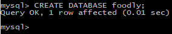

";" à la fin de chaque commande.C’est
une obligation pour signaler à SQL qu’on a terminé une instruction.

Définition de BDD = Base De Données
Définition de SGBD = Système de Gestion de Bases de Données. Le SGBD est le logiciel qui va permettre de manipuler les données d’une base. C’est ce logiciel qui commande les interactions avec la base pour y récupérer, ajouter, modifier ou supprimer des données.
| Ligne de commande | Définitions | Exemples |
|---|---|---|
| CREATE DATABASE "nom de la database"; |
Cette commande permet de créer une DATABASE dans MYSQL. Le nom de la DATABASE sera toujours en minuscule. Ne pas oublier le point-virgule ";" à la fin de chaque commande.C’est
une obligation pour signaler à SQL qu’on a terminé une instruction.
|
 |
| SHOW DATABASES; | Permet de voir toutes les bases de données créées | |
| DROP DATABASES; | Permet de supprimer la DATABASE selectionnées | |
| USE "nom de la database"; | Permet de sélectionner la base de données que l'on crée |
|